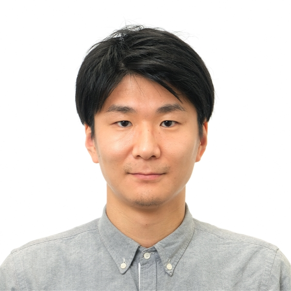

|  |
Naoto Inoue (井上直人) 3rd year Ph.D. student The University of Tokyo Tokyo, Japan inoue at hal.t.u-tokyo.ac.jp [GitHub] [Google Scholar] [CV] [Linkedin] |
I'm working with Prof. Toshihiko Yamasaki and Prof. Kiyoharu Aizawa at Aizawa-Yamasaki-Matsui Lab. My research interests are in computer vision, machine learning, deep learning, graphics, and image processing.
News
[Feb. 2020] One paper is accepted to Computer Graphics Forum (proc. of EuroGraphics 2020).[Dec. 2019] Our project to generate expressive lines is presented at Sneak Preview in Adobe Max Japan!
[Aug. 2019] One paper is accepted to Computer Graphics Forum (proc. of Pacific Graphics 2019).
[Jan. 2019] In summer 2019, I will intern in Adobe Research again.
[Nov. 2018] One paper is accepted to AAAI2019.
[Jul. 2018] In fall 2018, I will intern in Adobe Research.
[Apr. 2018] I will receive The University of Tokyo - NEC Future AI Scholarship for 2018-2021.
[Feb. 2018] One paper is accepted to CVPR2018.
Selected Publications

|
RGB2AO: Ambient Occlusion Generation from RGB Images Naoto Inoue, Daichi Ito, Yannick Hold-Geoffroy, Long Mai, Brian Price, Toshihiko Yamasaki In Computer Graphics Forum (proc. of Eurographics 2020). [Paper] [Paper(GDrive)] [Supp.] [Bibtex] [Video] |

|
Learning to Trace: Expressive Line Drawing Generation from Photographs Naoto Inoue, Daichi Ito, Ning Xu, Jimei Yang, Brian Price, Toshihiko Yamasaki In Computer Graphics Forum (proc. of Pacific Graphics 2019). [Paper] [Paper(GDrive)] [Slide] [Bibtex] [Video] |
|
|
Fully Convolutional Network with Multi-Step Reinforcement Learning
for Image Processing Ryosuke Furuta, Naoto Inoue, Toshihiko Yamasaki In AAAI, 2019. [Project] [Paper] [Code] [Bibtex] |
|
|
Cross-Domain Weakly-Supervised Object Detection through Progressive
Domain Adaptation Naoto Inoue, Ryosuke Furuta, Toshihiko Yamasaki and Kiyoharu Aizawa In CVPR, 2018. [Project] [Paper] [Code/Dataset] [Poster] [Slide(ja)] [Bibtex] |